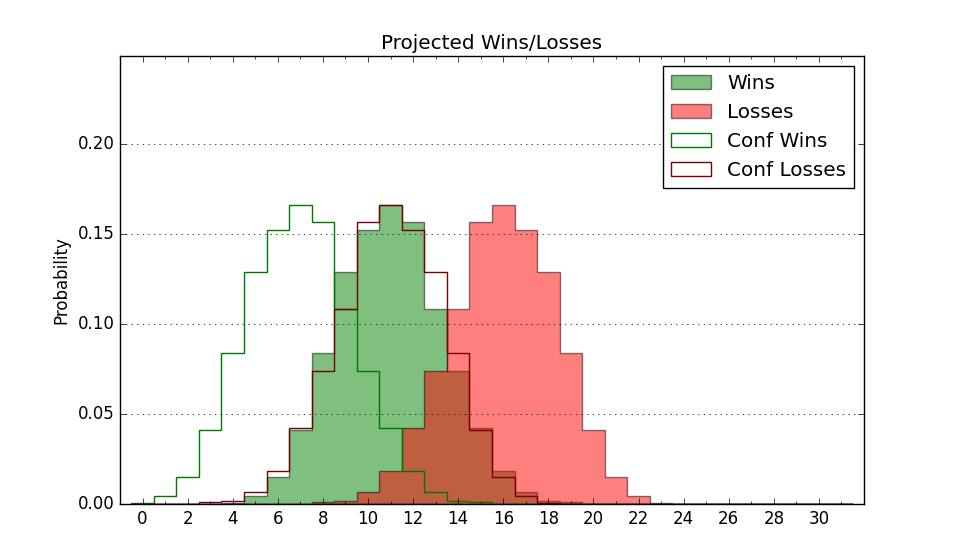

| Home | Game Probabilities | Conferences | Preseason Predictions | Odds Charts | NCAA Tournament |
| City: | Florence, Alabama | |
| Conference: | Atlantic Sun (1st)
| |
| Record: | 0-0 (Conf) 4-5 (Overall) | |
| Ratings: | Comp.: -10.6 (288th) Net: -9.5 (277th) Off: 100.8 (187th) Def: 110.3 (323rd) SoR: 2.2 (149th) |
| Remaining | ||||||
|---|---|---|---|---|---|---|
| Date | Opponent | Win Prob | Pred. | |||
| 12/30 | @ Jacksonville St. (240) | 25.6% | L 67-74 | |||
| 1/2 | Bellarmine (247) | 56.5% | W 70-68 | |||
| 1/5 | @ Lipscomb (220) | 22.5% | L 69-78 | |||
| 1/7 | Stetson (239) | 53.8% | W 73-72 | |||
| 1/12 | @ Liberty (87) | 7.4% | L 62-79 | |||
| 1/14 | @ Queens (198) | 19.9% | L 70-80 | |||
| 1/18 | @ Central Arkansas (322) | 43.4% | L 78-80 | |||
| 1/21 | Central Arkansas (322) | 72.3% | W 82-75 | |||
| 1/26 | Jacksonville (144) | 35.3% | L 64-68 | |||
| 1/28 | North Florida (238) | 53.6% | W 74-73 | |||
| 2/2 | @ Stetson (239) | 25.5% | L 69-77 | |||
| 2/4 | @ Florida Gulf Coast (103) | 9.0% | L 65-81 | |||
| 2/9 | Austin Peay (261) | 59.1% | W 69-67 | |||
| 2/11 | Lipscomb (220) | 49.7% | L 73-74 | |||
| 2/16 | @ Bellarmine (247) | 27.6% | L 66-72 | |||
| 2/18 | @ Eastern Kentucky (266) | 30.8% | L 71-77 | |||
| 2/22 | Kennesaw St. (194) | 45.2% | L 71-73 | |||
| 2/24 | Jacksonville St. (240) | 54.0% | W 71-70 | |||
| Previous | Game Score | |||||
| Date | Opponent | Win Prob | Result | Off | Def | Net |
| 11/10 | @Alabama A&M (332) | 47.0% | W 84-76 | 22.4 | -8.8 | 13.6 |
| 11/18 | @Mississippi Valley St. (361) | 74.1% | L 68-76 | -12.0 | -10.4 | -22.3 |
| 11/23 | @UC Santa Barbara (102) | 8.9% | L 71-89 | 12.0 | -17.3 | -5.3 |
| 11/26 | @Georgia Tech (94) | 8.0% | L 61-80 | -3.3 | -6.3 | -9.6 |
| 11/30 | @Memphis (37) | 3.4% | L 68-87 | 10.6 | -5.8 | 4.8 |
| 12/3 | @Morehead St. (302) | 38.5% | W 81-75 | 12.4 | 1.3 | 13.7 |
| 12/7 | Alabama St. (353) | 85.0% | W 71-63 | -5.6 | 4.9 | -0.7 |
| 12/15 | @Colorado (45) | 3.8% | L 60-84 | -4.4 | 4.5 | 0.1 |
| 12/20 | @Mississippi (77) | 6.2% | W 66-65 | 3.3 | 20.6 | 23.9 |
| Stats & Trends | |||||
|---|---|---|---|---|---|
| Current | Day | Week | Month | Season | |
| Composite | -10.6 | +2.2 | +2.8 | +3.7 | +2.4 |
| Comp Rank | 288 | +21 | +25 | +43 | +34 |
| Net Efficiency | -9.5 | +3.2 | +4.1 | +16.2 | -- |
| Net Rank | 277 | +22 | +26 | +64 | -- |
| Off Efficiency | 100.8 | -0.3 | -2.4 | +14.9 | -- |
| Off Rank | 187 | -3 | -45 | +135 | -- |
| Def Efficiency | 110.3 | +3.4 | +6.5 | +1.3 | -- |
| Def Rank | 323 | +23 | +37 | -12 | -- |
| SoS Rank | 92 | +46 | +118 | +266 | -- |
| Exp. Wins | 11.0 | +1.7 | +1.9 | +2.2 | +1.7 |
| Exp. Conf Wins | 7.0 | +0.7 | +0.9 | +1.0 | +0.5 |
| Conf Champ Prob | 0.3 | +0.1 | +0.1 | -0.2 | -0.6 |

| Advanced Stats | ||
|---|---|---|
| Stat | Value | Rank |
| Off Eff FG % | 0.505 | 164 |
| Off Ast Ratio | 0.112 | 337 |
| Off ORB% | 0.218 | 305 |
| Off TO Rate | 0.164 | 187 |
| Off FT Ratio | 0.334 | 126 |
| Def Eff FG % | 0.573 | 350 |
| Def Ast Ratio | 0.171 | 341 |
| Def ORB% | 0.228 | 55 |
| Def TO Rate | 0.143 | 298 |
| Def FT Ratio | 0.328 | 227 |